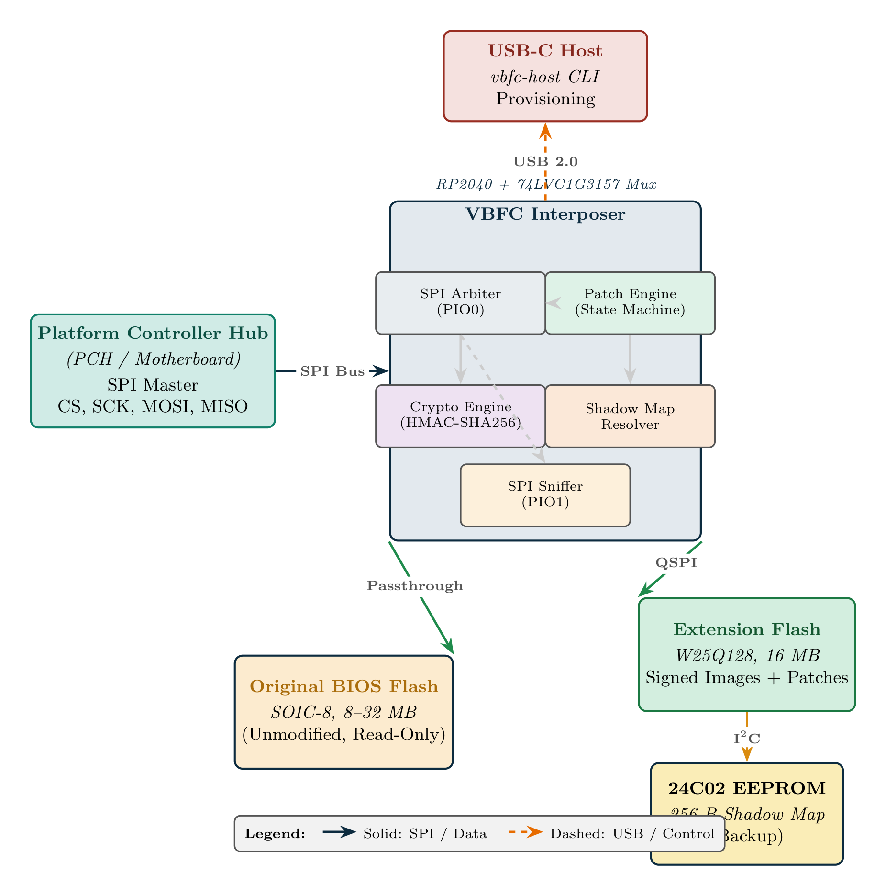
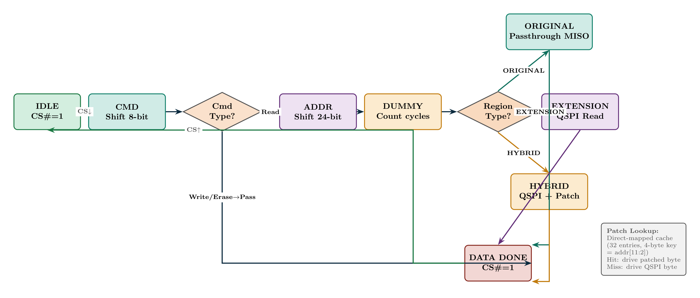
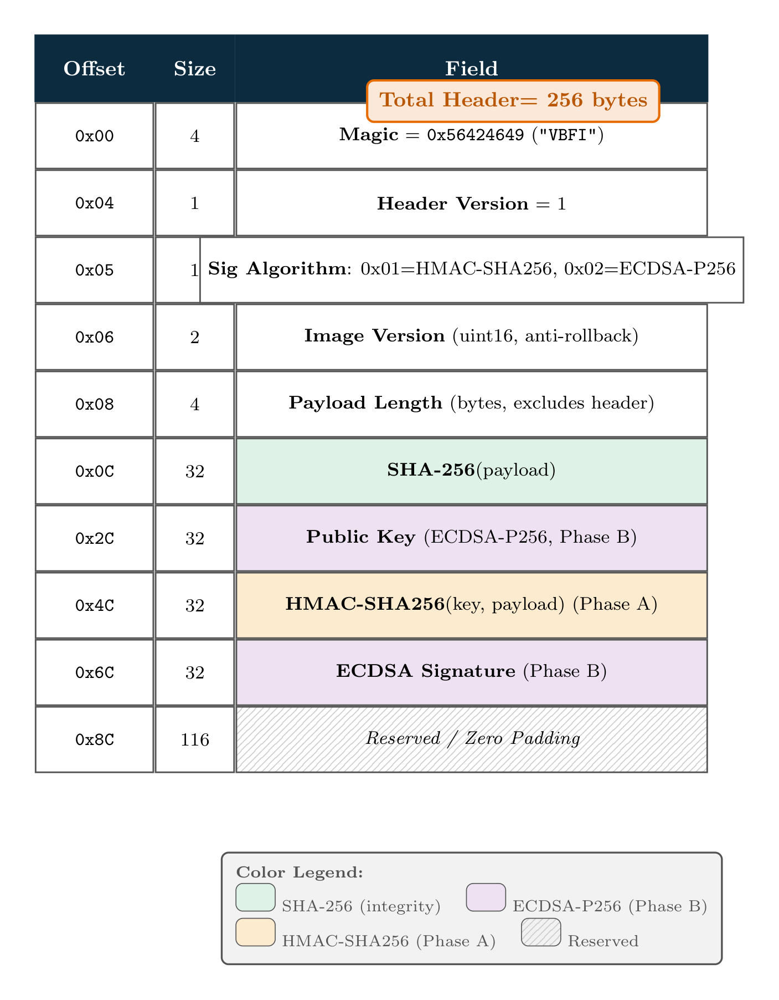
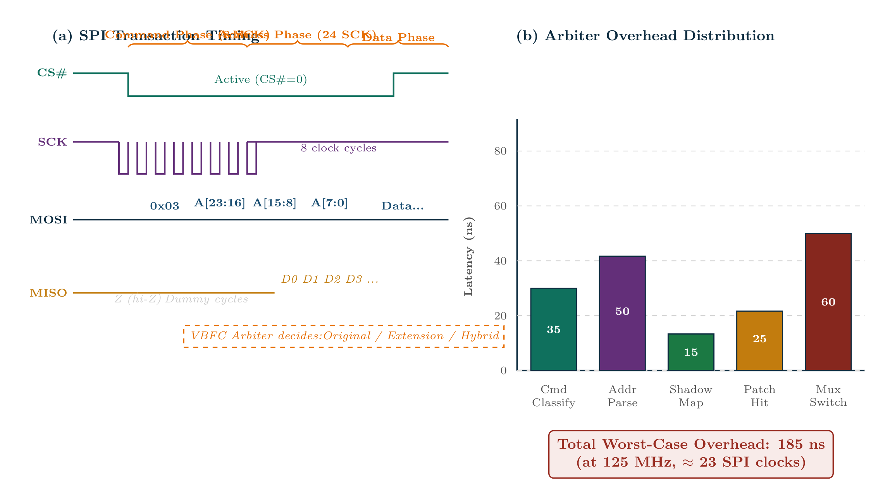

Repository: github.com/SowinySoft/Virtual-Bios-Firmware-Controller | License: MIT | Build: CMake + Ninja + Arm GNU Toolchain 14.2
Abstract. Modern x86 platforms store boot firmware in SPI flash memory and expose it through a privileged bus between the Platform Controller Hub (PCH) and the BIOS chip. The Virtual BIOS Firmware Controller (VBFC) is an open-source, low-cost SPI interposer designed to sit transparently on that bus and selectively substitute flash contents in real time without modifying the original device. Built around the Raspberry Pi RP2040 and a 16 MB extension flash store, VBFC combines address remapping, in-flight patching, transaction sniffing, and image authentication to support BIOS analysis, feature unlocking, and firmware hardening. The current repository revision also adds a breadboard validation rig, a Pico-based test master, a host-side regression suite, and a logging-driven validation workflow that make the bring-up process more reproducible and better suited for experimental publication. This paper presents the architecture, implementation, security model, and evaluation of the current prototype together with the most important remaining hardware-validation steps required before broader deployment.
Table of Contents
The BIOS firmware is one of the most security-sensitive software layers in a modern computing platform. It is responsible for early initialization, chipset configuration, and, on many systems, the first trusted execution path before the operating system loads. Because it is both privileged and difficult to inspect, BIOS modification has historically been expensive and risky.
The VBFC approach differs fundamentally. Rather than replacing or reflashing the original chip, it inserts a small interposer between the motherboard and the BIOS flash device. The interposer observes SPI transactions, selectively serves content from an extension flash bank, and optionally patches bytes in flight. This creates a practical path for feature unlocking, safe recovery, and research-oriented firmware experimentation while preserving the original BIOS as the fallback source.
The hardware architecture consists of a small passive interposer that sits inline between the PCH and the BIOS flash chip. The prototype uses an RP2040 microcontroller as the control plane, a W25Q128 extension flash for shadow images, and a simple MISO multiplexing strategy that permits pass-through or substituted reads. A bypass jumper provides a physical recovery path when the firmware is unavailable or a fault forces pass-through.

The interposer is designed to observe and influence SPI read traffic. The motherboard provides the SPI master clock and chip-select signals, while the VBFC monitors command, address, and data phases. The most important challenge is timing: the controller must classify commands and addresses quickly enough to avoid violating the bus protocol.

The firmware is organized around three main tasks: SPI transaction handling and address mapping, USB command processing and image transport, and safety monitoring and recovery. The architecture intentionally favors deterministic behavior. On power-up, the controller defaults to pass-through mode until a shadow map is loaded and validated.
A notable addition in the current repository revision is a reproducible validation framework for hardware bring-up. The project now includes a breadboard-oriented test rig, a small Pico-based test master that can interrogate the shared SPI bus, and a host-side workflow that automates validation scripts, captures log output, and records the results for later analysis. These additions are not a replacement for full platform validation, but they substantially reduce the effort required to debug timing, pass-through behavior, and shadow-map round-trip operations on real hardware.
The VBFC security model assumes that an attacker may have physical access to the interposer board or the host interface used to upload images. The attacker may attempt to overwrite the shadow image or inject a tampered BIOS image. The trusted base consists of the firmware running on the RP2040 and the embedded verification logic that authenticates uploaded content before it is served.
An important security requirement is that the interposer must not serve an untrusted image merely because a host tool uploaded it. The current design therefore supports a signed-image structure, in which the firmware verifies a header and payload before any shadowed region becomes active. The verification path checks that the image is structurally valid and that the cryptographic signature or HMAC verifies successfully.

A second security design goal is anti-rollback protection. A monotonic version field can be embedded in the signed image header so that older images cannot be replayed after a newer image has been installed. In addition, the bypass jumper and pass-through mode preserve recovery even when the interposer or its extension store becomes unavailable.
The firmware also implements a watchdog-driven safety path. If the arbiter detects an exception or if the system enters an invalid state, the controller can force pass-through instead of continuing to serve shadowed content. This feature is crucial because a BIOS interposer must preserve bootability under fault conditions.
The core implementation is a software-defined SPI monitor. The RP2040 samples the bus and decodes incoming commands, addresses, and data phases. The arbiter then chooses whether to serve bytes from the original BIOS chip or the extension flash bank. The design is simple and transparent, but the bit-bang approach leaves performance and robustness dependent on careful timing discipline.
The firmware supports a shadow map that describes which address ranges should be remapped to the extension store and which should continue to pass through to the original chip. A patch table enables byte-level substitutions in the read path, allowing fine-grained modifications while keeping the rest of the image intact.
The prototype also contains a bus sniffer that captures a bounded transaction history and exposes it through a host-side binary protocol. This is useful both for debugging and for understanding how the target platform accesses the SPI flash. The host CLI can upload images, dump regions, manage shadow maps, and inspect the sniffer state.
The most recent implementation work extends the project beyond firmware-only operation by introducing a breadboard validation harness. A dedicated test-master firmware targets a secondary Pico board and can read the JEDEC identifier from the shared SPI bus, while a Python validation runner executes a defined sequence of pass-through, shadow-map, and recovery checks. The workflow is complemented by regression tests in the host package and by a logger that writes each run to a timestamped file, making the validation steps reproducible for future experiments and publications.

The host-side toolchain is intentionally lightweight. It enables firmware image upload, shadow-map configuration, flash backup and restore operations, bus sniffing and dump collection, basic BIOS analysis workflows, and reproducible breadboard validation and logging. The CLI lowers the barrier for end users who may otherwise be forced to work with low-level SPI tools or custom hardware programmers, and it now serves as a practical vehicle for both research experimentation and structured hardware bring-up.
| Metric | Value |
|---|---|
| Image size (text) | 109,308 bytes |
| RAM usage (bss) | 20,864 bytes |
| Binary (.bin) | 104,808 bytes |
| UF2 blocks | 410 blocks (209,920 bytes) |
The prototype is functional, but the bit-banged SPI path remains the main performance bottleneck. The current design is suitable for research, experimentation, and controlled deployment, but a full production-quality implementation would require tighter timing validation and dedicated hardware acceleration.
The most important remaining validation task is real-hardware testing against an actual motherboard or BIOS flash target. The repository analysis notes identify this as the highest-value next step because the current implementation has not yet been validated end-to-end on a real platform. Recent additions improve this situation substantially: the project now ships with a breadboard validation rig, a Pico test master, a host-side validation runner, and a regression suite that covers protocol framing, CRC behavior, event decoding, and CLI behavior. These features do not replace physical validation, but they make the remaining bring-up work more systematic and better documented for future experiments.
VBFC is relevant to several distinct use cases: BIOS backup and restore, hidden-feature or setup-option unlocking, safe experimentation with modified firmware images, security research into SPI bus behavior and firmware integrity, and recovery paths for systems where direct flash programming is risky or impossible.
The VBFC project sits at the intersection of three research areas: low-cost firmware instrumentation, BIOS security, and embedded hardware interposition. Related efforts include open-source SPI analysis tools, firmware recovery devices, and BIOS modification workflows that depend on hardware programmers or software flashing infrastructure.
This manuscript presents VBFC as a practical prototype for BIOS-level interposition, feature unlocking, and firmware hardening. The design combines a transparent SPI shadow path, an authentication-aware image model, and a conservative safety mechanism that defaults to pass-through. The latest repository revisions further strengthen the project by adding a reproducible validation workflow, a breadboard test rig, and a regression-driven host toolchain that make the prototype easier to evaluate and replicate. The immediate next steps are to validate the implementation on real hardware, strengthen the host-side analysis workflow further, and continue hardening the cryptographic verification path.
Repository: https://github.com/SowinySoft/Virtual-Bios-Firmware-Controller